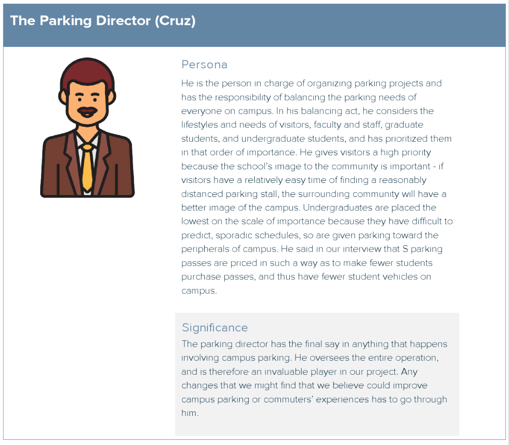
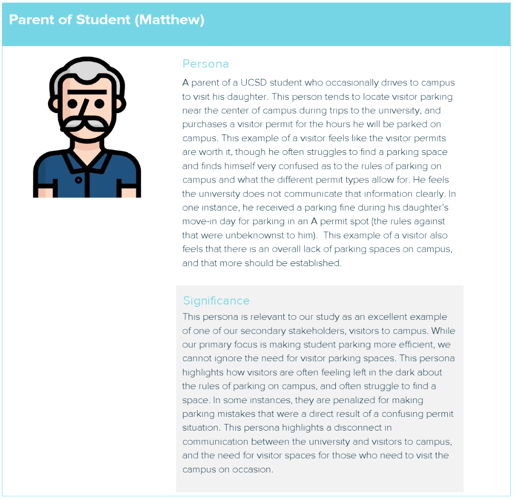
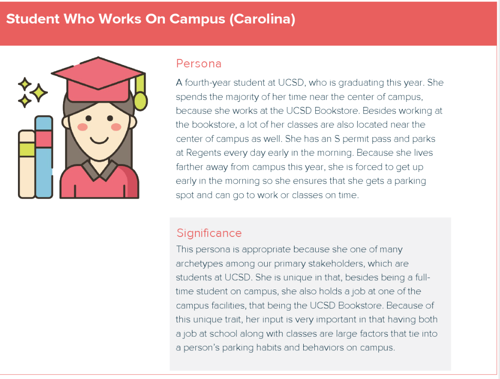
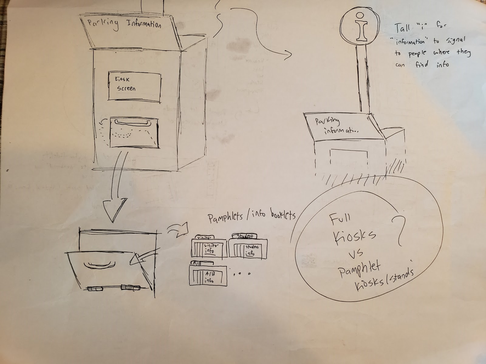
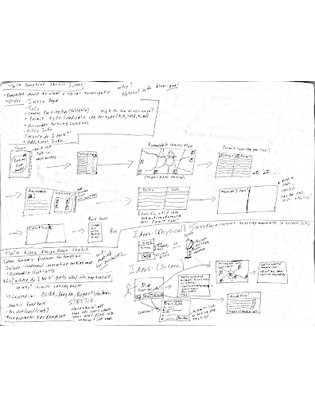
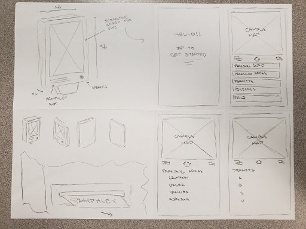
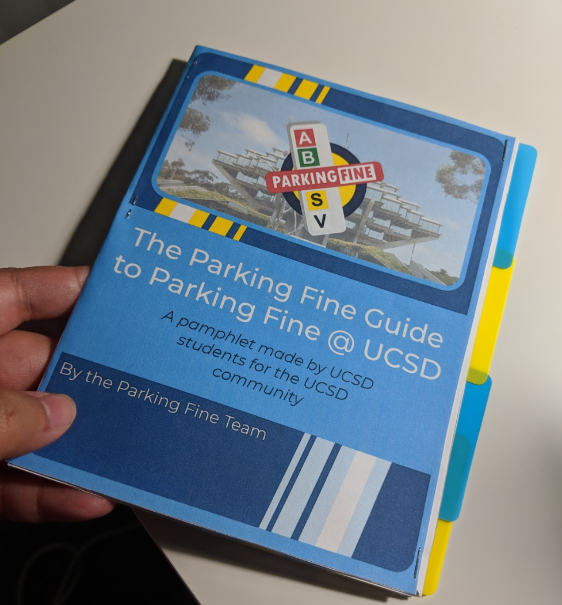
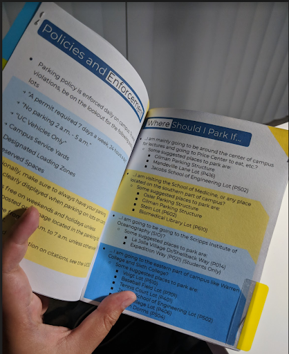
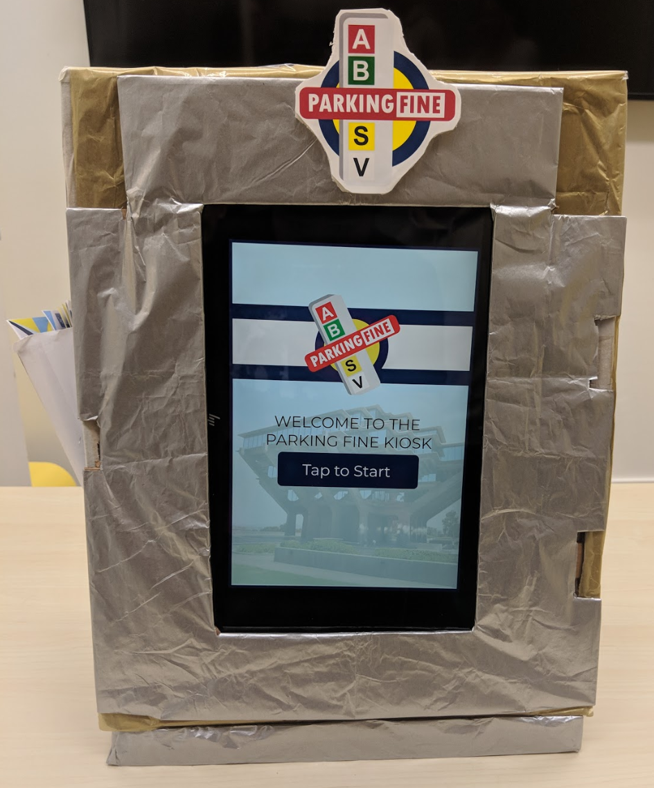
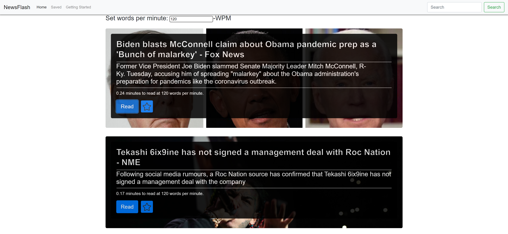

// My Projects
×
×


Parking Fine - Project Summary
Parking Fine was my final and most involved User Experience project I took on before receiving my degree from UCSD.
My group documented the project while we developed our product so we could more easily keep track of its scope and remind ourselves of the stakeholders involved.
We created several personas which helped us organize stakeholders' priorities and identify their respective breakdowns.
  Much of the work included ideation and subsequent prototyping:
  Our work largely consisted of interviewing various stakeholders to analyze trends and determine where there were the greatest breakdowns in our area of interest, namely, the parking system on campus.
During our research we discovered that there was a major disconnect between the users - people parking at UCSD, which consisted of students, professors, administration, and community members - and the parking & traffic department itself. We found that many people weren't sufficiently knowledgeable about the campus parking rules.
Thus, we set out to address this breakdown through redesigning and streamlining outdated, disorganized, and inefficient channels of information, specifically the UCSD parking website.
Our collaboration with the head of the parking department lead us to design kiosks which, if put into actual production, would be placed in parking lots throughout campus that contained more organized and readable information, through the accessible medium of paper pamphlets and a User Interface on the kiosks themselves.
  Our final design was a product that all aforementioned stakeholders were pleased with!
NewsFlash - Project Summary
NewsFlash was a project I took part in during my final quarter at UCSD. The design theme for the class was to design for people who are different from ourselves. With this in mind, we set out to create a web application that facilitated practice in speed reading for people with dyslexia.
Our starting point was our interest in research that showed that dyslexics are typically much better speed readers than non-dyslexics, and we wanted to develop something that could help foster this skill. We began with a simple program that took a string of words and flashed them at a set frequency that the user could increase or decrease to find a comfortable reading speed.
We expanded this function to draw from google's recent news API so as to perform a secondary function of giving readers relevant, real world information to practice on.
Finally, we implemented the capability to create a user profile so the user could save articles that they want to return to for further practice, set a preferred font, share articles they found interesting, and save their preferred word frequency.
This project allowed me to practice both front and back-end web development, and familiarized me with how to use databases and APIs.
Gymtel - Project Summary
Gymtel was a project that I took on in order to both encourage people who may have never gone to the gym to start going, and to make sure people exercise safely, regardless of skill level.
I wrote the HTML, CSS, and JavaScript code for the web app, and researched & implemented methods of keeping track of user preferences so the user could return to the app and feel comfortable continuing its use. This included things like different color themes, and setting a user profile picture.
Below is a demo of Gymtel, one of my first projects in web design:
View My Projects!
Logos
A logo redesign for my alma mater
A logo redesign for my alma mater